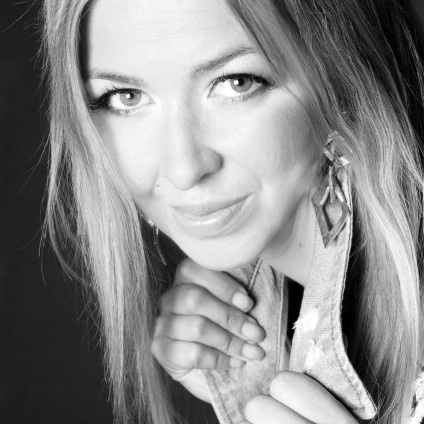

Packaging systems and product films, from the first sketch to the final render.

I model in 3D, design packaging, write the manuals nobody reads (but really should) and keep projects on schedule with a smile and a very long to-do list.
When I'm not designing, I'm vibe coding something new, picking up yet another hobby, dreaming up the next big idea or just taking it easy at the cottage.
Senior Visual Design Specialist. Technical documentation, packaging design, 3D visualisation and animation.